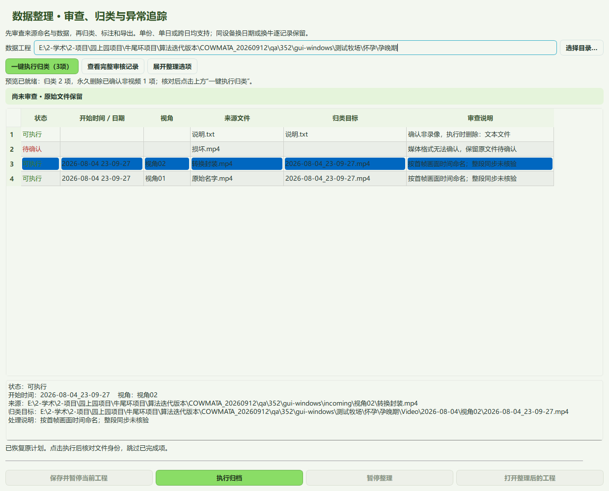
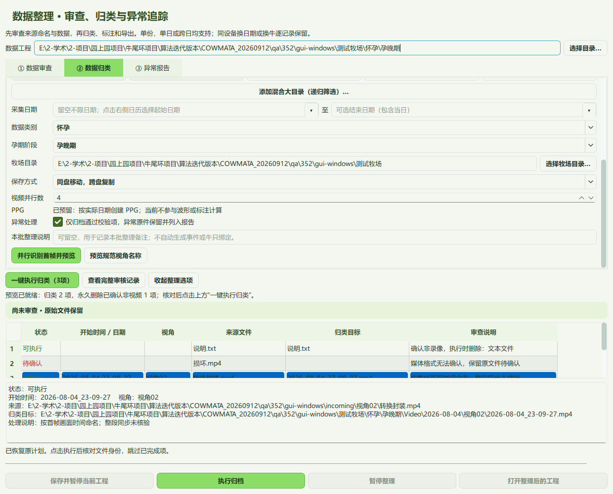
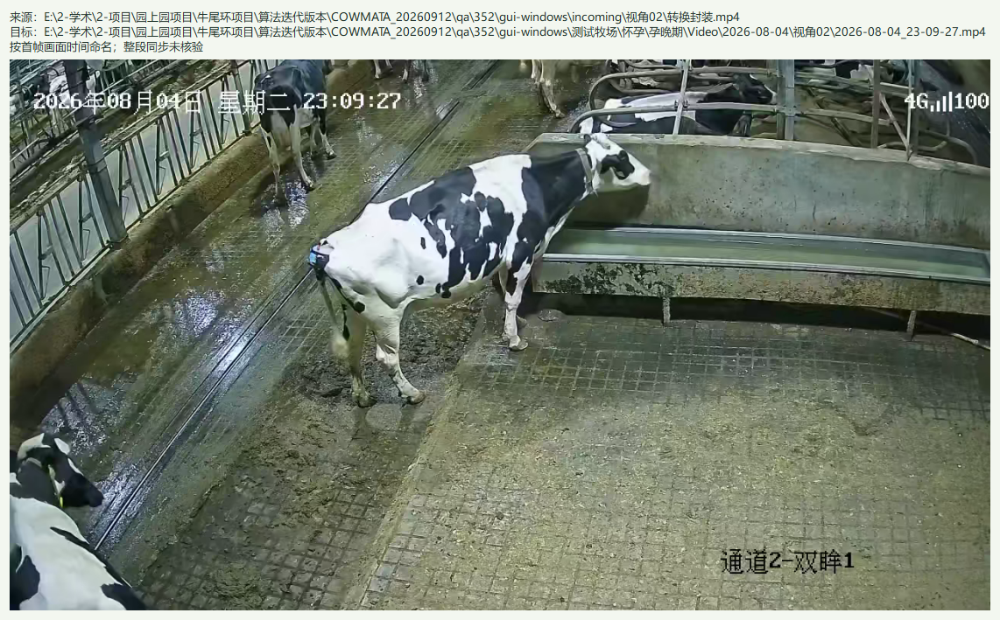

只读开始帧 · 海康像素识别优先 · 多视频并行 · 逐条显示与核查
视频按日期和视角归档，不绑定设备、耳标或现场记号。
牧场/类别/Video/2026-08-17/视角01/2026-08-17_00-00-00.mp4 牧场/类别/Video/2026-08-17/视角02/2026-08-17_00-00-00.mp4
已有九轴和标签：选择“九轴已归类，仅补整理视频”，指定现有类别工程。都未整理：选择“九轴与视频一起整理”。添加录像大目录后，程序递归读取视角01～视角08；无法识别视角时在来源表指定。

并行数默认4，可选1～8。机械盘可从2开始。视频只读首帧时间，海康适用布局优先使用像素时间戳识别器；无须录像内有专用时钟。仅补视频按已有九轴日期收录全天录像。点击“并行识别首帧并预览”后，每项完成就显示，此时尚未改名或删除文件。

双击录像行可查看首帧和命名结果；后台继续处理。核对后点击预览结果上方固定显示的“一键执行归类”，列表逐条显示已归档或已删除。选择记录后，下方完整信息区展示全路径及说明；点击“查看完整审核记录”可打开大窗口。

只在单独指定的录像来源中删除已确认非视频。九轴、标签、CSV、数据库、Motion/PPG及标注工程文件保留。“添加混合大目录”中的非视频保留。执行按钮旁列明永久删除的数量，核对预览后一次点击即可执行。
首帧读不清、损坏文件、视角不明均保留待确认，其他文件继续。同视角同一秒的不同内容追加序号，不覆盖。跨午夜文件按开始日期归档。归档命名不代表整段同步已核验。
可选复制或同盘移动；跨盘保留源文件。识别预览暂停后重新预览，可复用有效缓存；执行暂停后可继续原任务。原始数据和现有标签不因升级被删除。